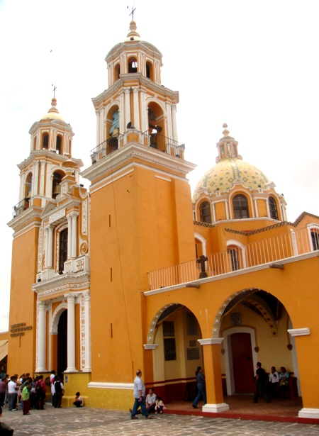
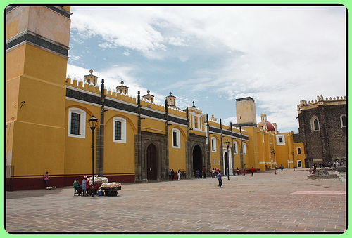
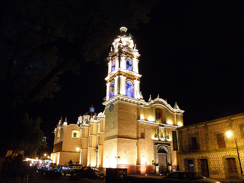
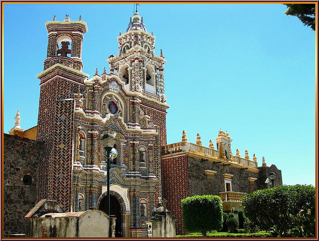
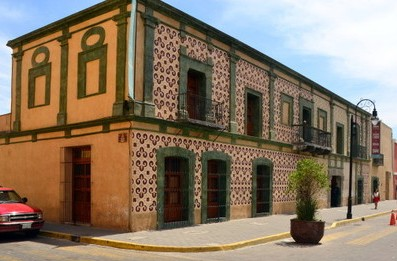
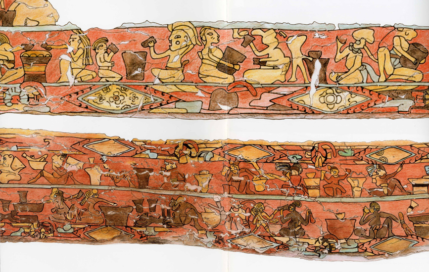

Sitios interesantes

Localizado en la cima de la pirámide, en
su fachada se puede apreciar un arco de medio
punto con columnas clásicas corintias enmarcan-
do la puerta. A lo lejos se puede apreciar su cú-
pula cubierta por azulejo de Talavera. En su in-
terior cuenta con una decoración estilo popular.

La Capilla Real es un templo elaborado por manos
indígenas de planta cuadrada, edificado sobre el antiguo
templo a Quetzalcóatl, formada por 7 naves de igual
anchura, excepto la central que es más amplia. En total
son 12 columnas, 24 pilastras octagonales, 12 soportes
que dan paso a las 49 cúpulas y 14 capillas con bóvedas de
arista. Las nueve de norte a sur representan los nueve
niveles de la tierra al cielo.

Situado en el centro de San Pedro Cholula, el
conjunto monumental dedicado al arcángel San Gabriel
muestra su importante estructura formada por: la barda
atrial, el atrio, las capillas posas, el templo, el claustro, la
capilla de naturales y la capilla de la Tercera Orden. San
Gabriel es uno de los templos más antiguos de México,
pues su fundación se remonta al siglo XVI, al año de
1549. El convento de San Gabriel se construyó en 1549.
Fue concluida y dedicada el 30 de abril de 1532, según se
leía en una inscripción que hubo en el arco del coro, que
hoy ha desaparecido.

Erigida el 28 de diciembre de 1640 y cúpula reedificada en 1782,
se eleva francamente contraposición al Convento de San Gabriel. Tiene
planta de cruz latina, cubierta con bóvedas de lunetos, su cúpula de
estilo churrigueresco cuenta con 8 ventanas adornadas de estípites, es
del siglo XVIII. En el nicho se encuentra la imagen del apóstol San
Pedro. La torre es de estilo barroco, de dos cuerpos y de sección
cuadrada, es la más alta de Cholula pues la cornisa está volada más de lo
debido por lo que esta torre sobresale en el panorama de la ciudad.

Tonantzintla se ubica a 4 Km. al sur de la ciudad de
Cholula por la carretera federal México 190 (es una
ramificación de esta carretera) y 15 Km. al sur de la
Ciudad de Puebla, por la carretera federal a Atlixco.

Ubicada a 5 kilómetros al sur de la Ciudad de Cholula. Es
la máxima expresión del barroco talaveresco. Su interior se pudo
reconstruir gracias a fotografías tomadas por Guillermo Kahlo
a principios del siglo pasado. Se edificó en el siglo XVII y XVIII.

La Casa del Caballero Águila deriva su nombre
tradicional de los dos bajorrelieves que, combinando
motivos prehispánicos y platerescos, flaquean su entrada
principal. El edificio constituye una de las más antiguas
construcciones civiles novohispanas que se conservan en
la región de Cholula, pues su planta baja data del siglo
XVI. El siglo XVII vio la construcción de la planta alta
que mira a la plaza, y el resto del inmueble y su
ornamentación fueron concluidos en etapas posteriores.

Fresco clásico teotihuacano, de 56.27m de largo y su
altura original fue de 2.50m. El mural alude a personajes
como en su mayoría del sexo masculino gruesos con
estómagos abultados de brazos y piernas de acción de
brindar total relajamiento, ataviados con mucha sencillez,
traen el ceñidor o maxtlatl, grandes turbantes de telas
terminados en elegantes colgajos, orejeras, y otros
adornos. Los acompañan otros individuos delgados de
postura erecta, en su calidad de sirvientes cargando
recipientes con el líquido sagrado.